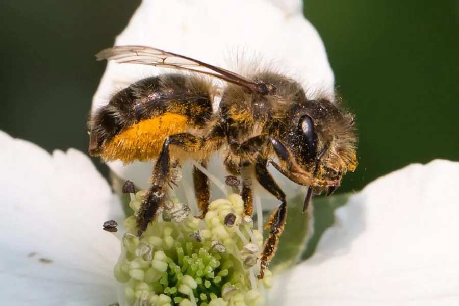

昆虫 · 动物界
壁蜂 Osmia cornifrons

体粗壮、腹部披红褐色毛的独居蜂，用泥土封堵芦苇管筑巢，春季为苹果和梨授粉，是果园重要的授粉昆虫。
- 分类
- 门节肢动物门纲昆虫纲目膜翅目科切叶蜂科属壁蜂属
- 栖息环境
- 果园、农田和林缘，巢筑于芦苇管、竹管、墙洞或木孔
- 地理分布
- 中国北方、朝鲜半岛和日本
- 保护级别
- 尚无保护级别；农药使用与野生巢址减少会影响种群
物种志
壁蜂的体长约八至十毫米，体形粗壮，头部与胸部黑色，腹部密被红褐色至黄褐色的绒毛，采集花粉的腹毛刷发达，看上去像一只小号的熊蜂。雌蜂的上颚强壮，用来咬开泥土和搬运泥团，腹部末端有螫针，但性情温和，极少蜇人。雄蜂体型略小，触角较长，没有螫针。
它分布于中国北方、朝鲜半岛和日本，栖息在果园、农田和林缘，是典型的独居蜂，不筑蜂巢群居，而是寻找芦苇管、竹管、墙洞或木孔，在里面依次堆放花粉团、产卵，再用泥土把管口封死，一管之内可排成一列数个巢室。它一年发生一代，以成虫在茧内越冬，春季气温回升后羽化，正好赶上苹果、梨、桃的开花期，授粉效率远高于蜜蜂。中国北方果园常人工释放壁蜂授粉，它是重要的农业益虫，尚无保护级别，但农药使用和野生巢址减少会影响其种群。
形态与习性
- 体长约八至十毫米，体形粗壮
- 体色头胸黑色，腹部披红褐色绒毛
- 筑巢在芦苇管、竹管或墙洞中分段筑巢，泥封管口
- 习性独居，不群居，性情温和极少蜇人
- 授粉春季为苹果、梨、桃授粉，效率高于蜜蜂
- 发生世代一年一代，以成虫在茧内越冬
趣味知识
- 它不筑蜂窝，而是把芦苇管当公寓，一节一节隔开育儿。
- 果园里挂一捆芦苇管，就能把壁蜂请来安家。
- 它性情温和，站在蜂管旁观察也很少被蜇。